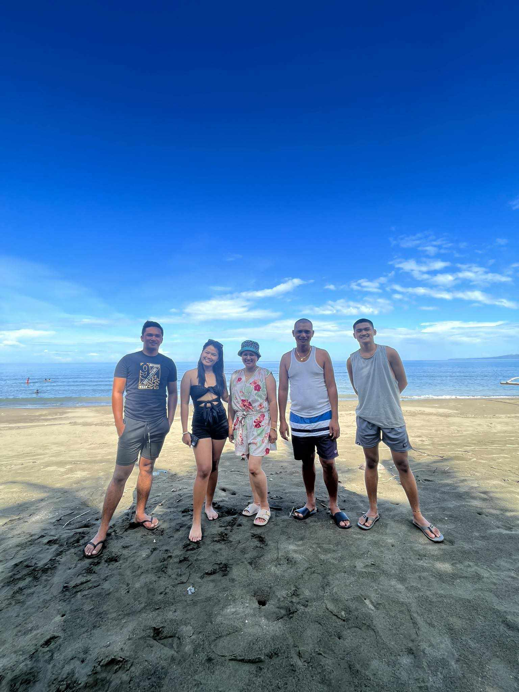
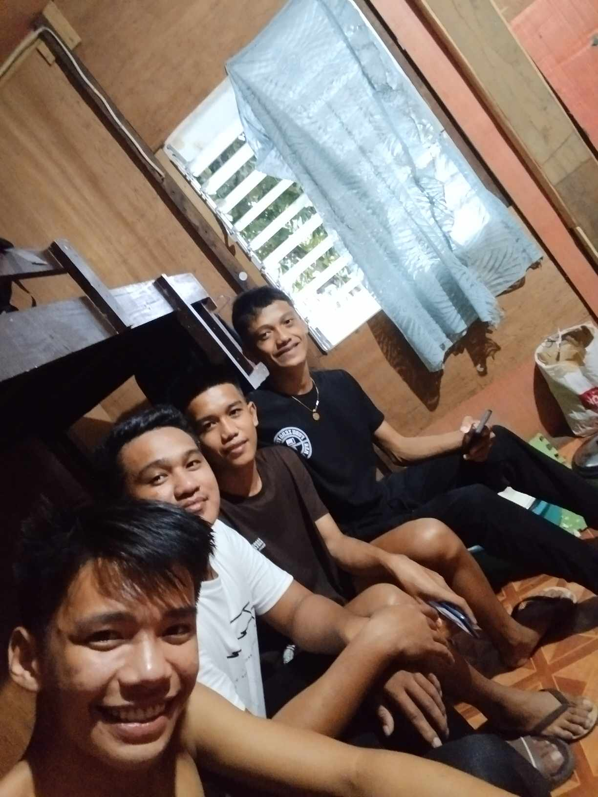

Myself
Title: Embracing Dreams: The Journey of Reynold B. Dayoc
Introduction:
In the quiet compound of Mahayag, Zamboanga del Sur, a young and ambitious individual named Reynold B. Dayoc resides, carving out his path amidst the serene surroundings. At just 20 years old, Reynold is a resident known for his passion for movies, his love for volleyball, and his pursuit of education at Blancia College Foundation Incorporated. Beyond the ordinary, he harbors a dream that sets him apart — a dream to become a soldier, patiently awaiting God's perfect time.
Body:
1. Early Life and Background:
Reynold B. Dayoc's story begins in the peaceful community of Mahayag. Born and raised in this close-knit compound, he imbibed the values of community, resilience, and determination from an early age. His family, friends, and the nurturing environment have played a pivotal role in shaping the person he is today.
2. Academic Pursuits at Blancia College Foundation Incorporated:
Currently enrolled at Blancia College Foundation Incorporated, Reynold is diligently working towards his academic goals. The institution has provided him with a platform to enhance his knowledge and skills, fostering an environment that encourages personal and intellectual growth. As he navigates through the challenges of academia, he remains committed to honing the qualities that will undoubtedly contribute to his future endeavors.
3. Hobbies that Define Him:
In the midst of his academic pursuits, Reynold finds solace and joy in two distinct hobbies. A cinephile at heart, he is captivated by the magic of movies. Whether it's the storytelling, cinematography, or the sheer entertainment factor, movies serve as a source of inspiration and relaxation for Reynold.
On the sports front, volleyball is more than just a game for him. It's an avenue for physical fitness, teamwork, and camaraderie. Through the highs and lows of the game, Reynold has learned valuable life lessons that extend beyond the volleyball court.
4. The Dream to Serve:
One of Reynold's defining aspirations is to become a soldier. Motivated by a deep sense of duty and service to his country, he patiently awaits God's perfect timing to fulfill this dream. The desire to contribute to something greater than himself and make a positive impact on society propels him forward, instilling a sense of purpose in his daily life.
5. Patience and Faith:
Reynold's journey is marked by patience and unwavering faith. While awaiting the fulfillment of his dream to become a soldier, he understands the importance of timing and divine intervention. This patience is a testament to his character, showcasing a resilience that will undoubtedly serve him well in any future challenges.
Conclusion:
Reynold B. Dayoc, a 20-year-old resident of Mahayag, is more than just a name on paper. His story is a testament to the power of dreams, the pursuit of education, and the patience required to navigate life's uncertainties. As he balances academics, hobbies, and the dream of becoming a soldier, Reynold exemplifies the resilience and determination that characterize individuals destined for greatness. In the quiet compound of Mahayag, a future soldier is emerging, ready to make a difference when God's perfect time arrives.

Family
Title: The Irreplaceable Bonds: Cherishing Family in the Tapestry of Life
Introduction:
In the intricate tapestry of life, family stands as the unwavering foundation, weaving threads of love, support, and shared memories. For Reynold B. Dayoc, the 20-year-old resident of Mahayag, Zamboanga del Sur, family holds a special place as some of the most important people in his life. In this reflection, we delve into the significance of family bonds and the enduring impact they have on shaping the person Reynold is becoming.
1. The Pillars of Support:
Family, often referred to as the backbone of our existence, plays a crucial role in providing support during life's journey. Whether it's the trials of academia, the pursuit of dreams, or the challenges of everyday life, Reynold's family stands as unwavering pillars, offering guidance and encouragement. The unconditional support received from family members becomes a source of strength, empowering individuals like Reynold to face the world with resilience.
2. Endless Memories:
The corridors of our minds are adorned with memories, and many of these precious moments are often created within the family unit. From childhood adventures to shared laughter around the dinner table, Reynold cherishes the multitude of memories that have shaped his upbringing. These memories serve as a reminder of the bonds that withstand the test of time, becoming the foundation upon which lasting relationships are built.
3. Balancing Relationships:
Navigating the intricate web of relationships requires a delicate balance, and for Reynold, family holds a place of unparalleled importance. As he endeavors to pursue his dreams, build friendships, and foster connections with others, he recognizes the significance of maintaining a harmonious balance. This delicate equilibrium ensures that the love and support he receives from his family are reciprocated in kind.
4. Prioritizing Love:
In the complex landscape of human relationships, prioritization is key. Reynold understands the importance of directing his love and attention to those who genuinely deserve it. By placing family at the forefront of his priorities, he cultivates a sense of gratitude and reciprocity, creating a positive cycle of love and support that radiates throughout his life.
5. The Enduring Bond:
Family bonds are unique in their ability to withstand the trials of time. Whether separated by distance or united under one roof, the connection forged within a family remains unbreakable. Reynold acknowledges the enduring nature of these bonds and finds solace in the knowledge that, regardless of life's twists and turns, his family will always be there for him.
Conclusion:
In the symphony of life, family plays a melody that resonates with love, support, and shared memories. For Reynold B. Dayoc, recognizing the importance of family has become a guiding principle. As he navigates the complexities of relationships, he holds steadfast to the belief that, at the core of it all, family will always be some of the most important people in his life. In this acknowledgment lies the essence of enduring bonds that shape not only Reynold's journey but also the collective narrative of familial love and connection.

Friends
Title: The Tapestry of Friendship: Cherishing Lifelong Bonds
Introduction:
In the vibrant mosaic of life, friends emerge as the colorful threads that add depth, joy, and irreplaceable moments. For Reynold B. Dayoc, a 20-year-old resident of Mahayag, Zamboanga del Sur, friends hold a special place as some of the most important people in his life. In this exploration, we delve into the profound impact of friendship, the enduring memories it creates, and the art of balancing relationships to share love with those who truly deserve it.
1. The Significance of Companionship:
Friends are not merely companions; they are the chosen family who walk alongside us through the various chapters of life. For Reynold, the significance of friendship lies in the shared experiences, laughter, and mutual support that define these relationships. In the tapestry of his life, friends have woven threads of camaraderie, creating a rich and vibrant pattern.
2. Lifelong Memories:
Just as family contributes to the treasury of memories, friends play an equally crucial role in crafting moments that linger in our hearts. From spontaneous adventures to late-night conversations, Reynold holds a treasure trove of memories with his friends. These shared experiences become the glue that binds friendships, forming a strong foundation that withstands the tests of time.
3. Balancing Relationships:
Balancing the various relationships life presents is an art, and Reynold recognizes the importance of maintaining equilibrium. As he juggles academic pursuits, family ties, and personal goals, the friendships he has cultivated become a source of joy and support. The ability to allocate time and energy to friends demonstrates a commitment to nurturing these connections and fostering a sense of belonging.
4. Prioritizing Genuine Bonds:
Amidst the myriad of relationships, the key lies in prioritizing genuine bonds. Reynold understands that the quality of friendships transcends mere quantity. By focusing on the people who reciprocate love, support, and understanding, he cultivates a circle of friends who enrich his life and contribute positively to his journey.
5. Love for Friends:
Love is a powerful force that binds friends together. As Reynold reflects on the importance of
y, shared experiences, and mutual support. For Reynold B. Dayoc, acknowledging the significance of friends has become a cornerstone of his life philosophy. As he navigates the intricacies of human connections, he finds solace in the knowledge that his friends, as some of the most important people in his life, will always be there for him. In this celebration of enduring friendships lies the beauty of a life enriched by the bonds of companionship and shared love.